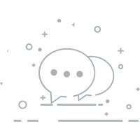

栏目介绍
{{ audio.name }}
{{ duration.current | duration-time }}
{{ duration.total | duration-time }}
{{ author.user_name }}

{{ author.self_introduce }}
选集
{{ el.name }}
精彩评论
{{ el.user_nickname }}
{{ el.like_number }}

{{ el.comment }}
{{ el.timestamp | interval-time }}
{{ ans.user_nickname
}}:
{{ ans.user_nickname }}回复{{ ans.listen_nickname
}}:
{{ ans.answer }}
我们需要您的神评论
-- 没有更多了 --